Lifelong Learning Canada
Lifelong Learning Canada is a nonprofit that helps people fund any kind of learning they need, at any level and at any stage of life. I volunteer with them, and I am redesigning the whole website and building it in WordPress with Elementor.
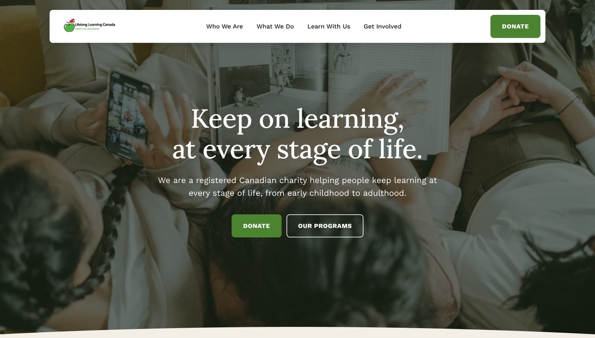
Give a small charity a website that people understand and trust.
All the content was already on lifelonglearn.ca, but it was hard to follow. My task was to reorganize that information, using only what the site already had, and to make it clear what Lifelong Learning Canada does and how they help people.
The Context
Lifelong Learning Canada has been around since 1992, but it's a small organization and that shows. They had few photos of their activities and almost no numbers, like how many people they helped. That was hard, because photos and data are what create a connection with the person on the other side, even to make a donation.
The logo is an apple in a strong green, and too much green can feel more like nature than learning. So a lot of my work was making the site feel like learning, without making anything up.
Who It's For
I created two personas, based on the two main reasons people visit the website. They helped me decide what each page needed to say, and what each person should see first.
“I know what I want to study. I just don’t know how I’d pay for the books and fees.” She needs to see who Gift of Learning is for, the next step in plain language, and stories of people like her.
“Show me it’s a real charity and that the money reaches someone. Then I’ll give.” He needs the charity number, the campaign progress and real learner stories before he gives.
Sitemap
I mapped every page before designing any screen. I kept the four menus from the live site, so people who already use it still find everything. The Donate page is new: before, the button went straight to Zeffy.
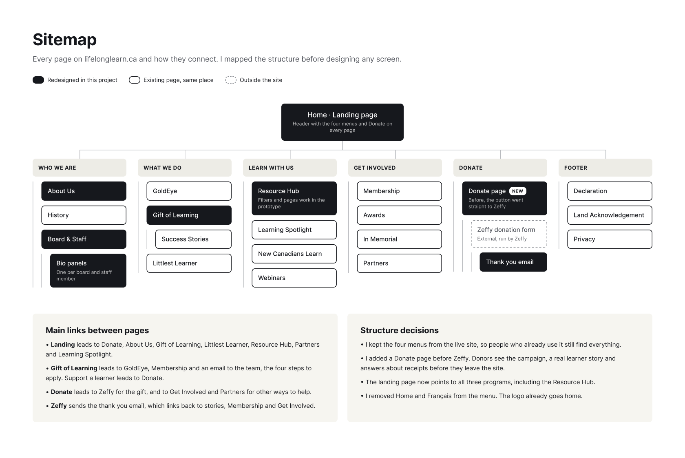
User Flows
For a charity, the “purchase” is a donation or a request for support. I mapped each step Maria and David take, where they could give up, and the design answer for each risk.
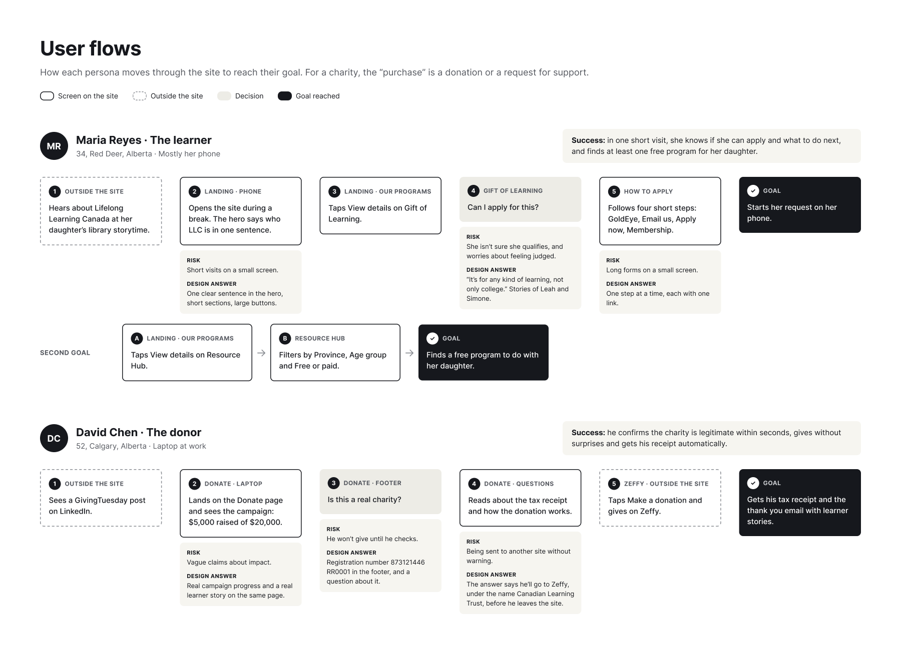
Wireframes
Before any colour or photo, I planned the pages in grey, using the real content from the site, to get the order right: what someone needs to see first, and where each page leads next.
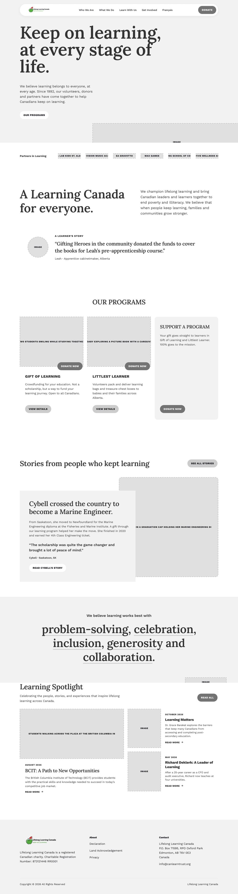
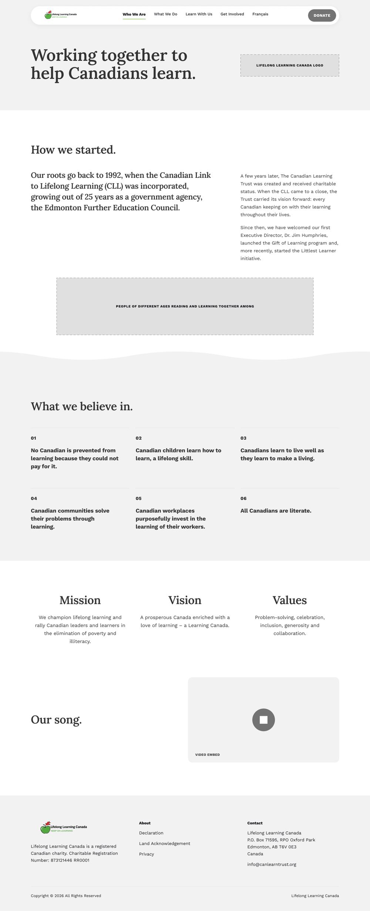
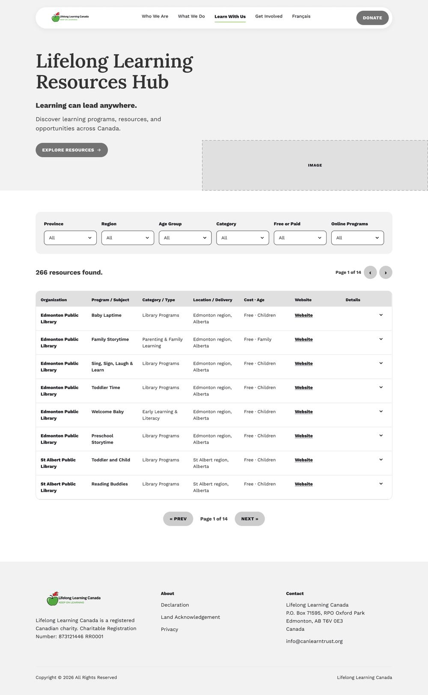
The Pages
The landing page now explains who Lifelong Learning Canada is, what they do and how they help, before asking anyone to donate. The new Donate page shows the campaign progress, a real learner story and answers about tax receipts. Gift of Learning is written for Maria, and the Resource Hub turns a long list of programs into a search with filters.
Scroll inside the window to see each page.
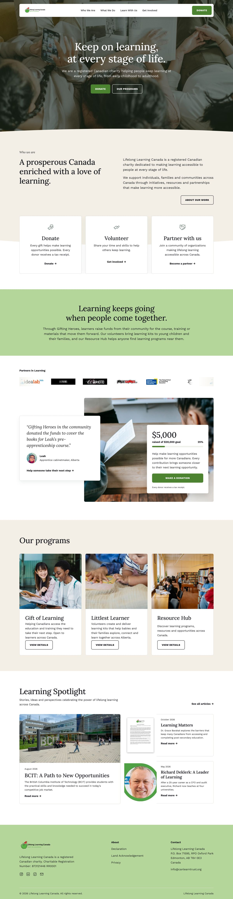
When Nothing Matches
Filters can return zero results. Instead of an empty table, the page says what happened and gives one way out: clear the filters. Photos show real people. Illustrations are for tools and moments like this one.
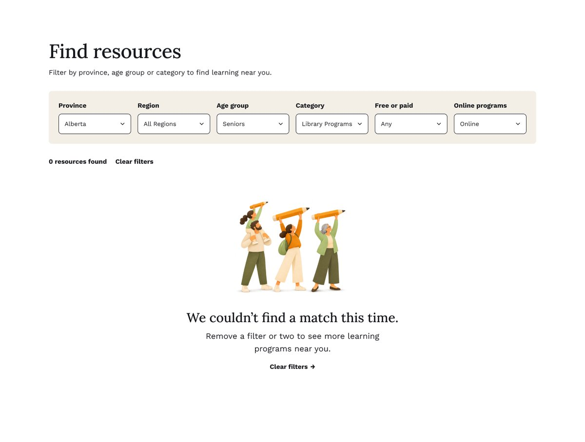
On Mobile
Every page has a mobile version. On small screens the menu opens in its own screen and the resource table turns into cards, so nothing needs side scrolling.
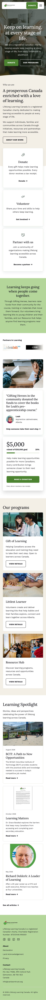
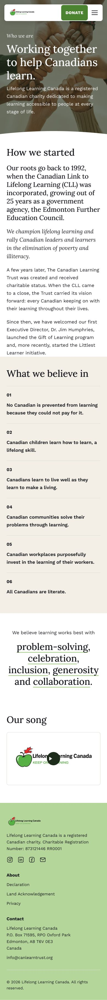
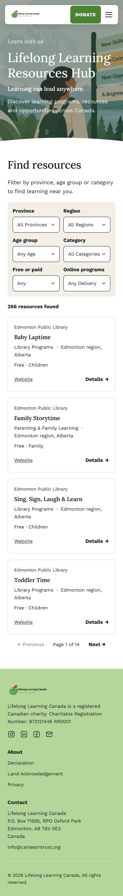
After the Donation
After giving on Zeffy, the donor gets a thank you email. It came from one question: how can people who donate feel closer to the organization? The email confirms the tax receipt, shares real learner stories and shows other ways to help.
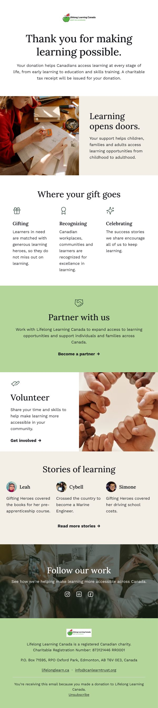
The Design System
The site had many pages, but nothing kept them consistent. Colours, text styles, buttons, the header, the footer, cards and filters are all saved in Figma. A warm oat colour balances the green: the light logo green is only a background, and the strong green is only for Donate.
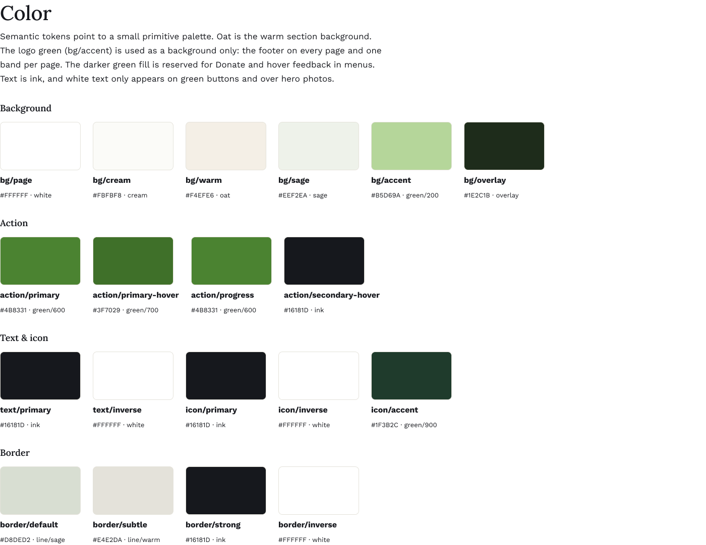
Feedback
“The Gift of Learning page… that one was a disaster.” Early on, the team found it hard to read. I redesigned it with strong contrast, real learner photos and stories, and clear copy.
“The site tells the story well, but it doesn’t connect that story to donating.” Now a real learner story sits next to the campaign progress and the donate button.
Some pages felt like a different site. I simplified the greens and gave every page the same kind of hero.
How I Validate It
Done: the Lifelong Learning Canada team reviewed each page, and a senior designer reviewed the site. Each step of Maria’s and David’s path has a risk and a design answer.
Next: a short test with five people using the prototype: make a donation, find a program in Alberta, and check if the donation gives a tax receipt. After launch, I want to track how many people click Donate and finish on Zeffy, how many Hub searches return no results, and clicks in the thank you email.
How I Used AI
Alignment, spacing, checking that every section lined up. The repetitive things that eat up a lot of time.
When I got stuck, I asked for font pairings and color options, looked at them side by side and chose myself.
It helped me build the components and the design system in Figma much faster, so I had more time for the design itself.
See the Full Design
All the pages, the mobile versions, the sitemap, the user flows, the wireframes and the design system are in Figma.